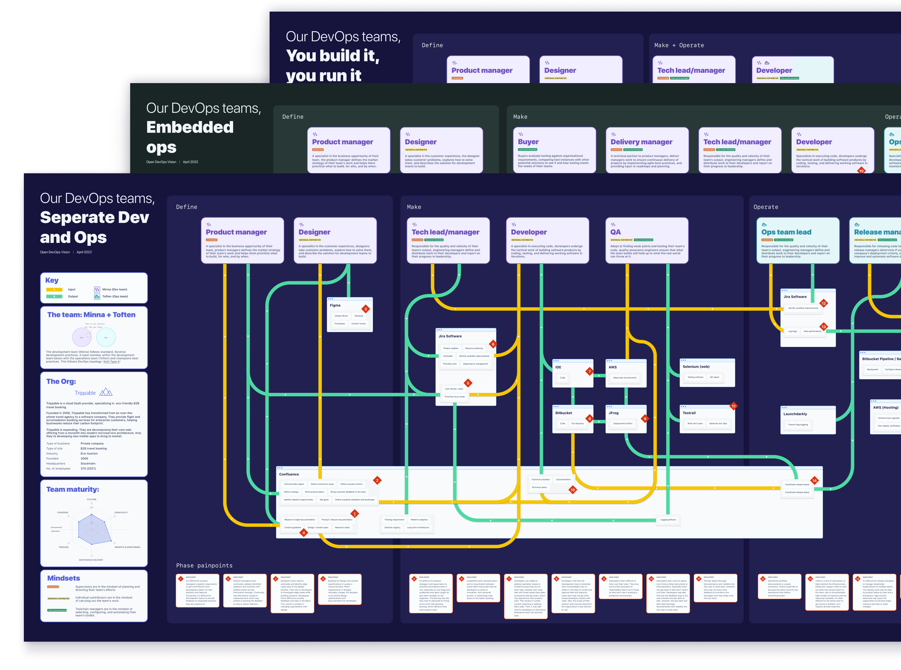
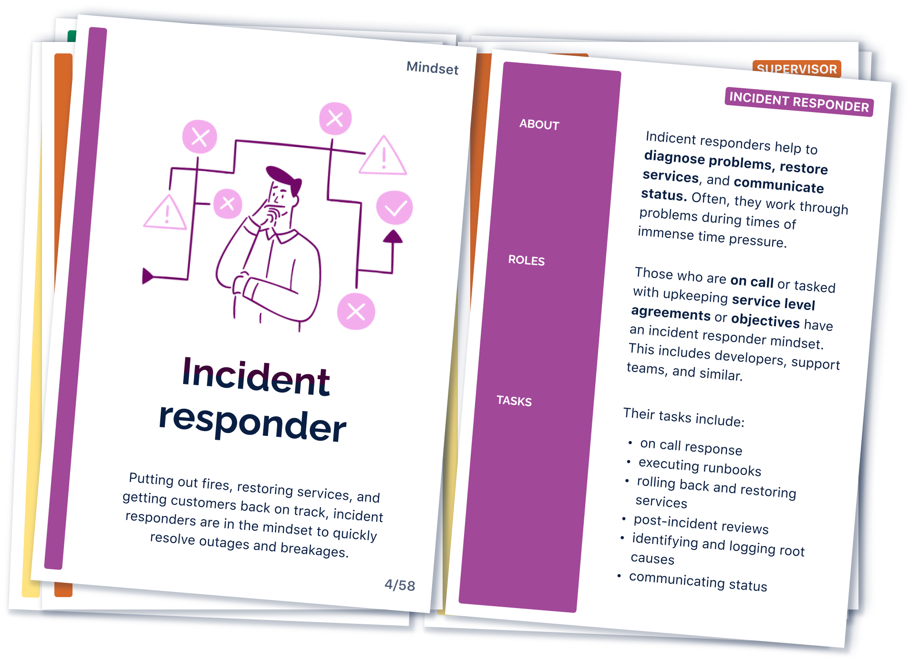
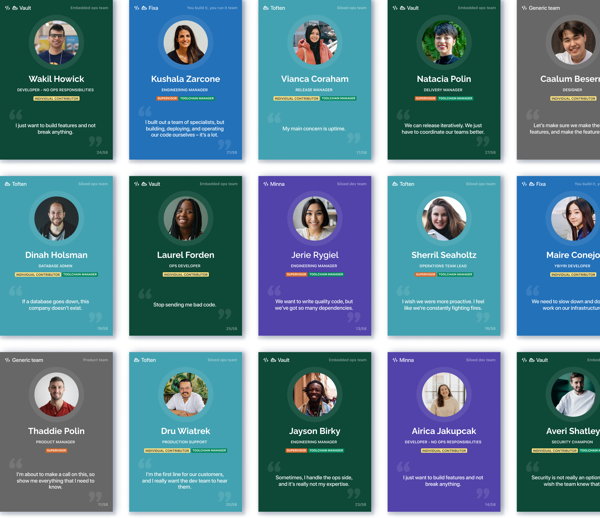

Open DevOps vision
Atlassian has invested heavily in grabbing up the DevOps market, working to help define the industry best practices that you-build-it-you-run-it teams will follow far into the future. While the investment was ready, the strategy on how to serve this market was not. I was asked to lead design work for a vision that better defined how Atlassian would achieve its goals with DevOps software teams.
With a small team - a very senior product manager, a lead researcher, a newly-hired lead product designer, and an execution designer - we were tasked with defining a 3-5 year strategy and vision for what we eventually called “Open DevOps”.
The process
We followed a typical double diamond approach for this work. Atlassian has rebranded these stages into: wonder (discovery), explore (divergent thinking, prototyping and concept testing), make (code slapping), and impact.
During our wonder phase, our small team synthesised 50+ secondary research reports in the field, both internal and external research inquiries and industry white papers. I devoured content about DevOps team topologies, books like Accelerate and The Phoenix Project. All this in an attempt to quickly understand the distinctions, challenges, and struggles of modern DevOps product development.
While my product manager counterpart facilitated sessions exploring questions like “why should Atlassian pursue this?” and “what’s our opportunity size?”, I focused on answering questions around “who is our target audience?” and “what jobs are they trying to accomplish with DevOps products?”
Through our explore phase, I led designers in mapping out the current and ideal journeys of software product development through the lens of different DevOps team topologies. I wrote organisation, team, and team member profiles outlining the motivations, needs, pains, and gains of as many DevOps roles and collaborators I could. Working with a lead researcher, we validated these profiles against real customers.
The design team armed our product peers with these insights. Together, we ideated broadly across several emmergent themes from our research. These became strategic pillars and guiding policies that direct an entire organisation at Atlassian in the work they do. From these strategic pillars, we envisioned 10 indicative product experiences to discuss with customers. These experiences helped us probe into various aspects of our strategy. They visualised what was coming through our research.
While in the make phase, we uplifted these prototypes, taking in customer and stakeholder feedback. We also created assets for our execution teams, including a card deck with common DevOps roles for product teams to use when building out their feature sets. We also created team maps showing the common interactions, tooling, and pains associated with how different DevOps team topologies carry out their work. And, we created a microsite where Atlassians could visit to learn about our DevOps strategy, our target market, the shape and motivations of DevOps organisations, and details about why our beliefs in this area are strong.
The outcome

Atlassian reorganized to support our strategy, shuffling some 8+ product teams under the banner of “Open DevOps”. It has become a primary strategy for our business, and we’ve since worked on delivering the experiences envisioned during the project, including features supporting:
- Progressive delivery (daily deployment)
- Security posture (integrated vulnerability planning)
- Insights and metrics (ML and AI-driven team recommendations and alerting)
- Source code management, builds, and deployments
- DevOps reporting
I have completed many design visions in my career, but I’ve never seen so much of a vision actually put onto roadmaps. Of the 7 strategic pillars we defined and envisioned, all but 1 have been actioned by the business.
In terms of numbers, the features built off the back of this vision have proven the following:
- Customers who connect their toolchains using Open DevOps features grow faster (both monthly recurring revenue and paid enabled usage), upgrade their plans more frequently, and are half as likely to churn, compared to customers who use stock Jira Software.
- Customers who use Open DevOps features achieve a 358% return on that investment (according to a Forrester study), and see gains in both productivity and development speed.

The design assets we created have sped up teams building in this problem space. They are standard onboarding material for new team members and short-circuit a lot of the learning needed to be effective in a highly technical and complex domain.
What I learned
Design visions can sometime fall flat, or get left on a shelf. Pairing with a very senior product manager, who can fluently speak the language of the business, helped greatly in ensuring that our vision was acted on.
Humans want things in neat boxes. While our intent was that all teams act to support the strategic themes we laid out in our strategy, individual teams ended up taking ownership of one theme over another and drawing lines in the sand regarding the responsibility of delivering to that theme. I think this was a pretty big miss and had a lot to do with the way that we communicated our vision to the organization. If I were to do it again, I would’ve been clearer about the overarching nature of our strategic themes.
Design is the story teller. Before this vision work, internal stakeholders not intimate with our work were at a loss as to what it was that we were pursuing. They simply couldn’t see it. Design’s role in exposing what’s possible, where a company is headed, and what experiences might be created changes the conversation from “what?” to “how?”. That’s a recipe for success.